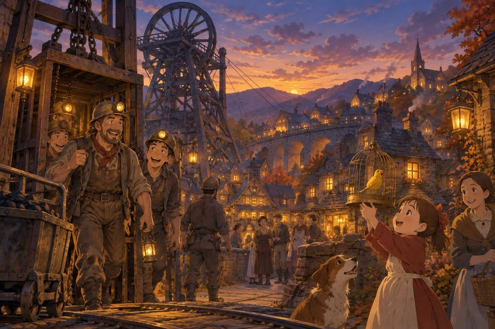

Lowdelve and the Underway
A mining valley of slate roofs and grey spoil heaps, and the pitch-black workings beneath it where Frost is king.
On this page
East of Tollbridge the road climbs into the hills and drops into Lowdelve, a valley of slate roofs and grey spoil heaps. The winding wheel over the pit head is still, and everyone outside is caught mid-step: miners with their lamps, a girl holding up a birdcage, a man at the pit gate. The pit runs on its shift clock, so you have to go down the mine.
The Underway below the valley is pitch black and hot in places, with old lamps, sealed doors and loose pages of somebody's notes. Many of the Rust here are hot too, which changes what you should carry.
At a glance
| Where | Lowdelve, The Safety Lamp, Cobb's Forge, The Underway, The Deep Workings. The west road returns to Tollbridge. The hill road north is closed for now. |
| Who you can meet | Captain Tregarth, Polly (with her canary), Old Gethin and a miner in Lowdelve. Nance Pellow at the Safety Lamp. Cobb at the forge. Ottoline, a scholar who studies the Rust, somewhere in the Underway. |
| Shops and inns | Cobb's Forge sells Frost Flasks (44 Marks), Hop Salve (46) and good gear, such as the Pit Jacket (470) and Pitman's Knife (520). Cobb also makes things from Rust Scrap, which beaten Rust leave behind. The Safety Lamp: a bed is 10 Marks. See Shops. |
| Rest and save | A camp in Lowdelve as soon as you arrive. A save clock in the Underway. A save clock in the Deep Workings. |
| Moth Light | Kindle, learned in the Underway. It lights old lamps to open sealed doors, and once per fight you can tap Moth in battle to send a friend in next without using up your turn. |
Rust here
Many of the Rust here are hot, so Frost is the element to carry and Spark is much less useful. Full tables are on Lowdelve to Glasshouse Rust.
| Rust | Where | Weak to |
|---|---|---|
| Rust Tub | Lowdelve, Underway, Deep Workings | Tide |
| Tin Canary | Lowdelve, Underway, Deep Workings | Spark (quick, 30% evade; its Shrill can Daze the party) |
| Rust Tunneller | Underway, Deep Workings | Spark (resists Gear) |
| Firedamp | Underway, Deep Workings | Frost (resists Spark, strong at magic, 20% evade) |
| Pit Boiler | Deep Workings | Frost (resists Spark; its Scald can leave a friend Rusting) |
The optional elite is the Old Boiler, with two Tin Canaries, found at the edge of Lowdelve, the Underway and the Deep Workings. It is weak to Frost, resists Spark and does not return once beaten. A boss waits at the bottom of the mine.
Chests and secrets
| Where | Chest | Hidden |
|---|---|---|
| Lowdelve | 2 x Frost Flask | No |
| Lowdelve | Safety Lamp | Yes, needs Seek |
| Lowdelve | Smelling Salts | Yes, needs Seek |
| Underway | 2 x Frost Flask | No |
| Underway | Field Glass | No |
| Underway | 3 x Tonic | No |
| Underway | 120 Marks | No |
| Underway | Pit Jacket | Yes, needs Seek |
| Deep Workings | 2 x Smelling Salts | No |
| Deep Workings | Winding Hook | No |
| Deep Workings | Pitman's Knife | No |
| Deep Workings | 2 x Frost Flask | Yes, needs Seek |
Sealed doors in the Underway are guarded by old miner's lamps with black wicks. Nothing you carry will light them.
Side stories and errands
| Errand | Where | What to do | Reward |
|---|---|---|---|
| Lisle's last notes | The Underway, Professor Lisle's desk | Ottoline asks you to find three loose pages of her old teacher's notes: one pinned under a stone by the rails, one tucked behind a loose rock, one folded small in a crate of lamp wicks. Bring them back to his desk. Do it before the boss. | Ottoline learns Read, which shows what every foe will do next, her Bond with Wren grows, and you receive Lisle's Lens |
| Cobb's smithing | Cobb's Forge | Beaten Rust leave Rust Scrap. Bring it to Cobb to make Cogs and Frost Flasks. | Crafted gear and flasks |
Tips
- Bring plenty of Frost. Buy Frost Flasks at Cobb's, and pick up the ones in chests on the way down.
- Ottoline's healing and Frost skills carry this chapter. Keep her protected.
- Collect the three pages before the boss. Read changes every fight afterwards.
- Save at the clock in the Deep Workings before you go on.
The full story of this chapter is on Chapter 4 plot and boss, with spoilers.
Next stop: Saltmarsh Wharf. Back: Tollbridge and Belcourt.